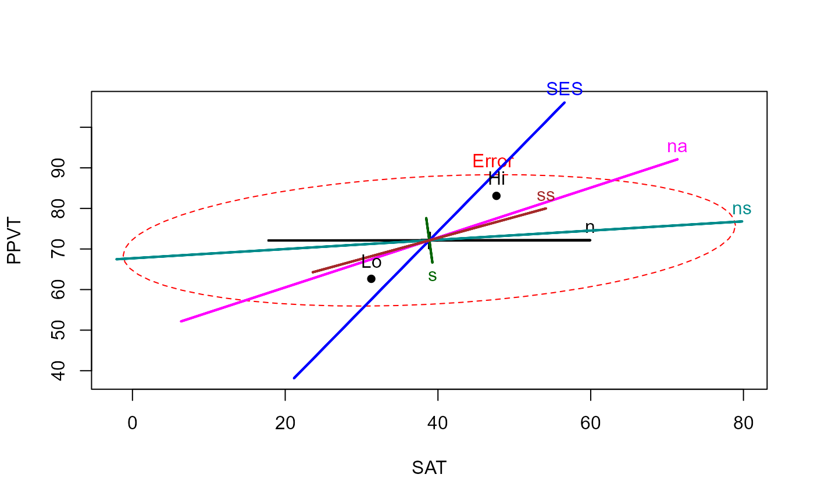
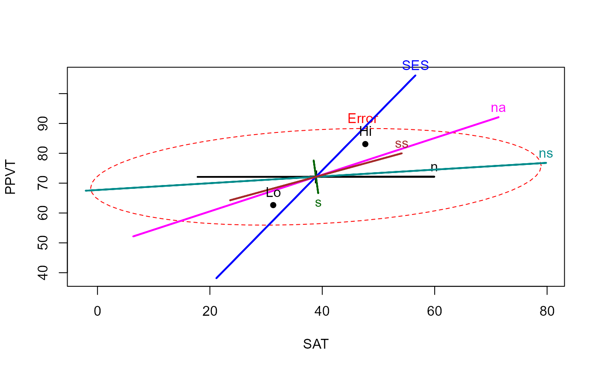

Rohwer Data Set
Rohwer.RdData from an experiment by William D. Rohwer on kindergarten children designed to examine how well performance on a set of paired-associate (PA) tasks can predict performance on some measures of aptitude and achievement.
data(Rohwer)Format
A data frame with 69 observations on the following 10 variables.
groupa numeric vector, corresponding to SES
SESSocioeconomic status, a factor with levels
HiLoSATa numeric vector: score on a Student Achievement Test
PPVTa numeric vector: score on the Peabody Picture Vocabulary Test
Ravena numeric vector: score on the Raven Progressive Matrices Test
na numeric vector: performance on a 'named' PA task
sa numeric vector: performance on a 'still' PA task
nsa numeric vector: performance on a 'named still' PA task
naa numeric vector: performance on a 'named action' PA task
ssa numeric vector: performance on a 'sentence still' PA task
Details
The variables SAT, PPVT and Raven are responses to be
potentially explained by performance on the paired-associate (PA) learning taskn, s, ns, na, and ss.
Source
Timm, N.H. 1975). Multivariate Analysis with Applications in Education and Psychology. Wadsworth (Brooks/Cole), Examples 4.3 (p. 281), 4.7 (p. 313), 4.13 (p. 344).
References
Friendly, M. (2007). HE plots for Multivariate General Linear Models. Journal of Computational and Graphical Statistics, 16(2) 421--444. http://datavis.ca/papers/jcgs-heplots.pdf
Examples
str(Rohwer)
#> 'data.frame': 69 obs. of 10 variables:
#> $ group: int 1 1 1 1 1 1 1 1 1 1 ...
#> $ SES : Factor w/ 2 levels "Hi","Lo": 2 2 2 2 2 2 2 2 2 2 ...
#> $ SAT : int 49 47 11 9 69 35 6 8 49 8 ...
#> $ PPVT : int 48 76 40 52 63 82 71 68 74 70 ...
#> $ Raven: int 8 13 13 9 15 14 21 8 11 15 ...
#> $ n : int 1 5 0 0 2 2 0 0 0 3 ...
#> $ s : int 2 14 10 2 7 15 1 0 0 2 ...
#> $ ns : int 6 14 21 5 11 21 20 10 7 21 ...
#> $ na : int 12 30 16 17 26 34 23 19 16 26 ...
#> $ ss : int 16 27 16 8 17 25 18 14 13 25 ...
## ANCOVA, assuming equal slopes
rohwer.mod <- lm(cbind(SAT, PPVT, Raven) ~ SES + n + s + ns + na + ss, data=Rohwer)
Anova(rohwer.mod)
#>
#> Type II MANOVA Tests: Pillai test statistic
#> Df test stat approx F num Df den Df Pr(>F)
#> SES 1 0.37853 12.1818 3 60 2.507e-06 ***
#> n 1 0.04030 0.8400 3 60 0.477330
#> s 1 0.09271 2.0437 3 60 0.117307
#> ns 1 0.19283 4.7779 3 60 0.004729 **
#> na 1 0.23134 6.0194 3 60 0.001181 **
#> ss 1 0.04990 1.0504 3 60 0.376988
#> ---
#> Signif. codes: 0 '***' 0.001 '**' 0.01 '*' 0.05 '.' 0.1 ' ' 1
# Visualize the ANCOVA model
heplot(rohwer.mod)
 # Add ellipse to test all 5 regressors
heplot(rohwer.mod, hypotheses=list("Regr" = c("n", "s", "ns", "na", "ss")))

# View all pairs
pairs(rohwer.mod, hypotheses=list("Regr" = c("n", "s", "ns", "na", "ss")))
# Add ellipse to test all 5 regressors
heplot(rohwer.mod, hypotheses=list("Regr" = c("n", "s", "ns", "na", "ss")))

# View all pairs
pairs(rohwer.mod, hypotheses=list("Regr" = c("n", "s", "ns", "na", "ss")))
 # or 3D plot
if (FALSE) {
col <- c("red", "green3", "blue", "cyan", "magenta", "brown", "gray")
heplot3d(rohwer.mod, hypotheses=list("Regr" = c("n", "s", "ns", "na", "ss")),
col=col, wire=FALSE)
}
## fit separate, independent models for Lo/Hi SES
rohwer.ses1 <- lm(cbind(SAT, PPVT, Raven) ~ n + s + ns + na + ss, data=Rohwer, subset=SES=="Hi")
rohwer.ses2 <- lm(cbind(SAT, PPVT, Raven) ~ n + s + ns + na + ss, data=Rohwer, subset=SES=="Lo")
# overlay the separate HE plots
heplot(rohwer.ses1, ylim=c(40,110),col=c("red", "black"))
heplot(rohwer.ses2, add=TRUE, col=c("blue", "black"), grand.mean=TRUE, error.ellipse=TRUE)
# or 3D plot
if (FALSE) {
col <- c("red", "green3", "blue", "cyan", "magenta", "brown", "gray")
heplot3d(rohwer.mod, hypotheses=list("Regr" = c("n", "s", "ns", "na", "ss")),
col=col, wire=FALSE)
}
## fit separate, independent models for Lo/Hi SES
rohwer.ses1 <- lm(cbind(SAT, PPVT, Raven) ~ n + s + ns + na + ss, data=Rohwer, subset=SES=="Hi")
rohwer.ses2 <- lm(cbind(SAT, PPVT, Raven) ~ n + s + ns + na + ss, data=Rohwer, subset=SES=="Lo")
# overlay the separate HE plots
heplot(rohwer.ses1, ylim=c(40,110),col=c("red", "black"))
heplot(rohwer.ses2, add=TRUE, col=c("blue", "black"), grand.mean=TRUE, error.ellipse=TRUE)